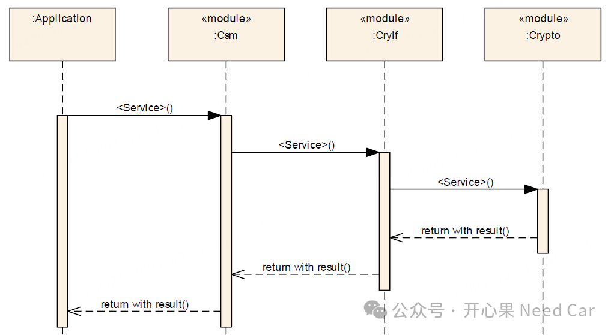
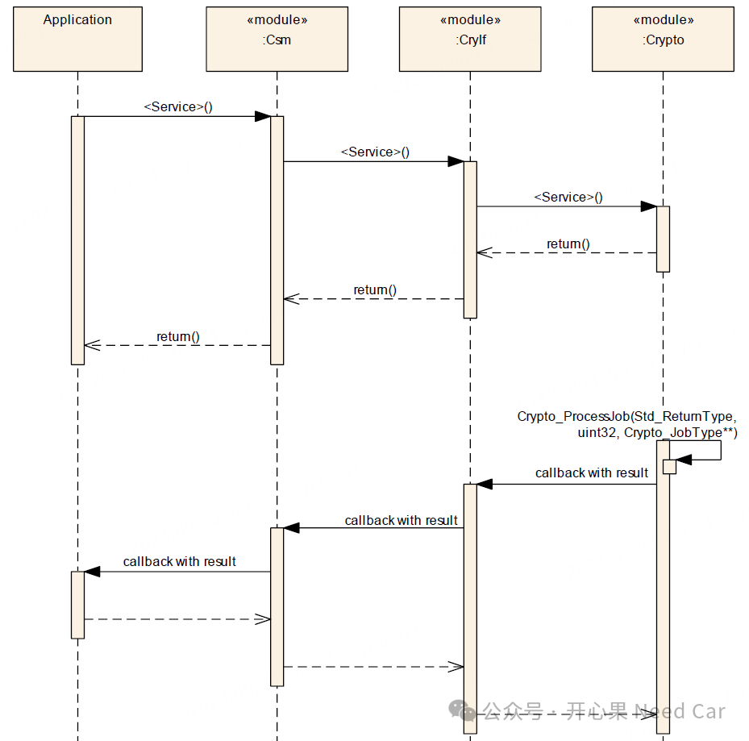
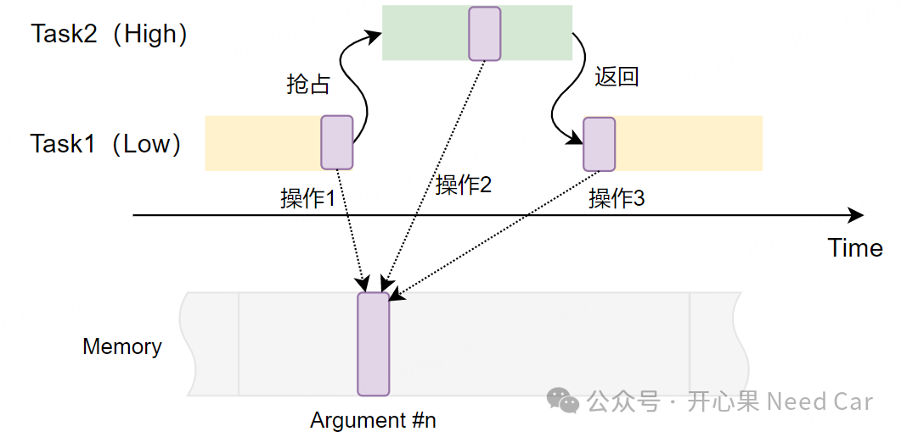
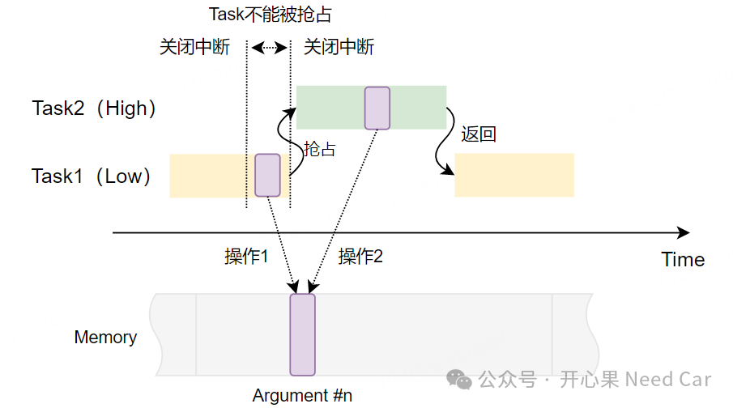

搞软件开发的小伙伴，对于同步接口(Synchronous Interface)和异步接口(Asynchronous Interface)并不陌生。但是，对于两种类型的接口使用，是否有所思考呢？本文，主要聊一聊同步接口，即：同步接口，为什么不能长时间关闭中断操作呢？
同步接口：调用同步接口时，如果没有收到服务的响应（返回状态），该接口就会被阻塞，直到收到服务响应的状态为止。该方式需要占用大量的CPU资源，因为在未收到服务返回状态之前，CPU会被阻塞在该接口中。以信息安全服务请求为例，同步接口调用时序如下所示：

由于同步接口在服务请求以后，会一直等待请求的返回状态，因此，同步接口一般不需要回调函数（callback function）。
异步接口：调用异步接口服务时，不必立即获取服务的请求结果，CPU可以继续执行主程序，当服务完成以后，以回调函数（callback function）的形式反馈服务的请求状态，该方式的优点就是不会阻塞CPU，提高系统的响应速度。以信息安全服务请求为例，异步接口调用时序，如下所示：
在单核系统中，为了确保数据的一致性，常常会进行临界区保护，常用的方式之一就是：临时关闭/开启中断方案。首先，我们回顾一下数据不一致可能出现的场景，示意如下：
低优先级的Task1正在对内存（Memory）中的某个全局变量（Argument #n）进行操作，此时，高优先级的Task2打断了Task1，并且Task2也对Argument #n进行了操作，当程序返回到Task1以后，由于Argument #n被Task2修改过，Task1再次操作这个数据时，将会造成数据不一致。既然存在如上的工况会使得数据不一致，怎么处理呢？本文主要讨论临时关闭/启动中断的方式，确保数据一致性。示意如下：
如上图，低优先级的Task1在操作全局变量（Argument #n）期间，临时关闭中断（短时），操作完Argument #n以后，再打开中断。在此期间，即使高优先级的Task2到来，也无法打断Task1任务，只能等到Task1操作完Argument #n，并重新使能中断，进而确保数据一致性。
既然临时关闭和开启中断可以确保数据的一致性，为什么又不能长时间关闭中断呢？关闭中断无疑会阻断中断例程的执行，比如：定时器中断、通信等外设类中断。如果因为长时间关闭中断，导致关键性任务无法及时处理，将降低系统的实时性。当低优先级的任务关闭中断以后，意味着高优先级的任务无法抢占低优先级的任务，使得高优先级任务获取不到资源，进而使得优先级反转。当然，关闭中断还会引发死锁、系统稳定性降低等问题，本文不逐一讨论。回到本文问题：如果在同步接口中长时间关闭中断，死等返回结果状态，可能会因为得不到返回状态而阻塞整个程序的运行，进而导致系统异常。
在软件设计中，为了保证软件的鲁棒性，在某个服务请求中，一般不会死等返回结果，如果返回结果非预期，会等待一个时间跳出，即：超时设定。示意如下：do{ result = Job_Request(); TimeOutTicks = Timer_DelayGetTick() - TimeOutCountInitial;} while ((TimeOutCount > TimeOutTicks ) && (E_OK != result ));
所以，本文问题不仅仅适用在同步接口，异步接口也是一样的道理，关闭中断的处理时间不宜过长，否则，将影响系统的性能。点击下方关注，一起聊聊Autosar/嵌入式，如果需要，联系作者进群，给你更专业的解答